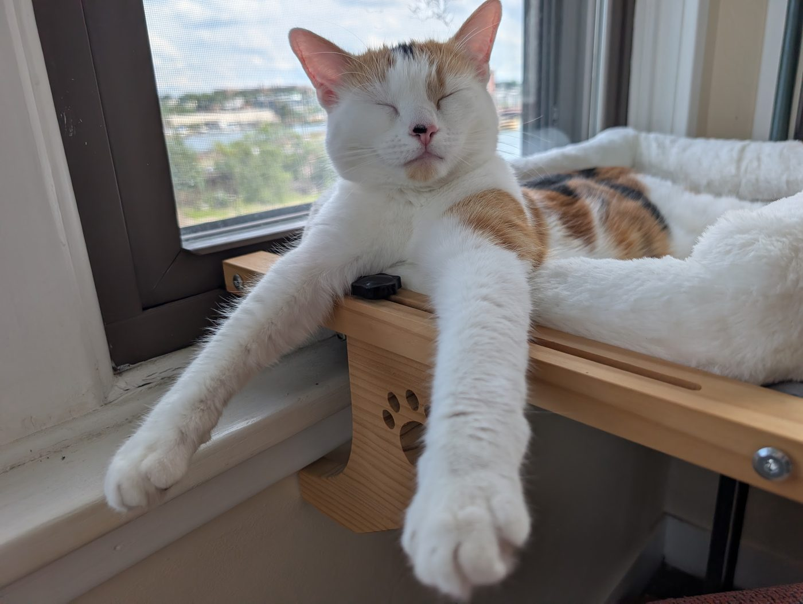
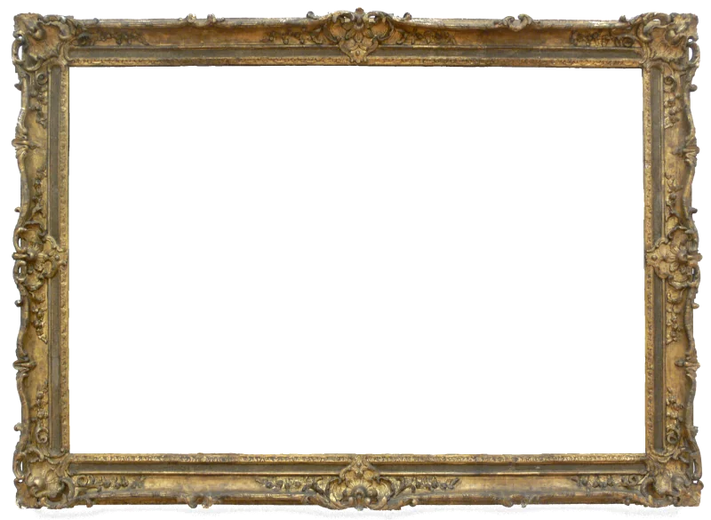
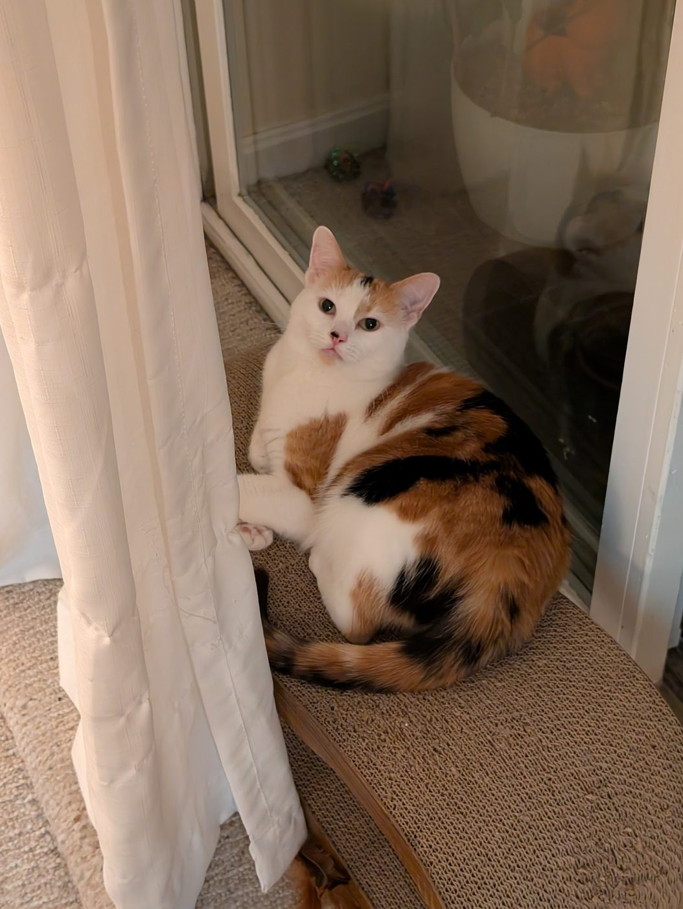
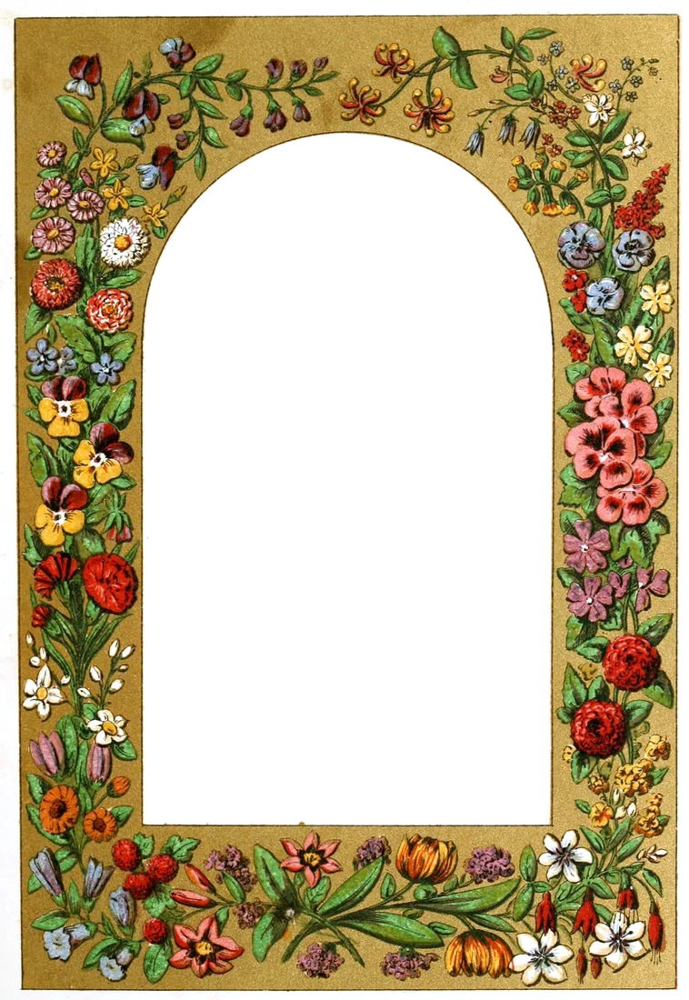
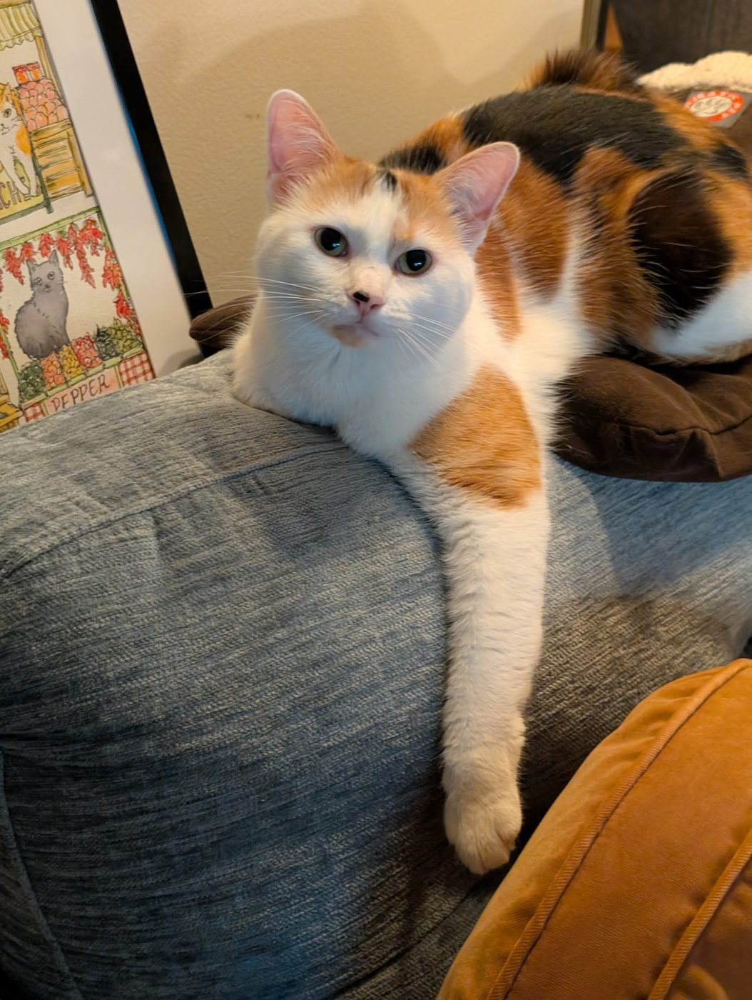
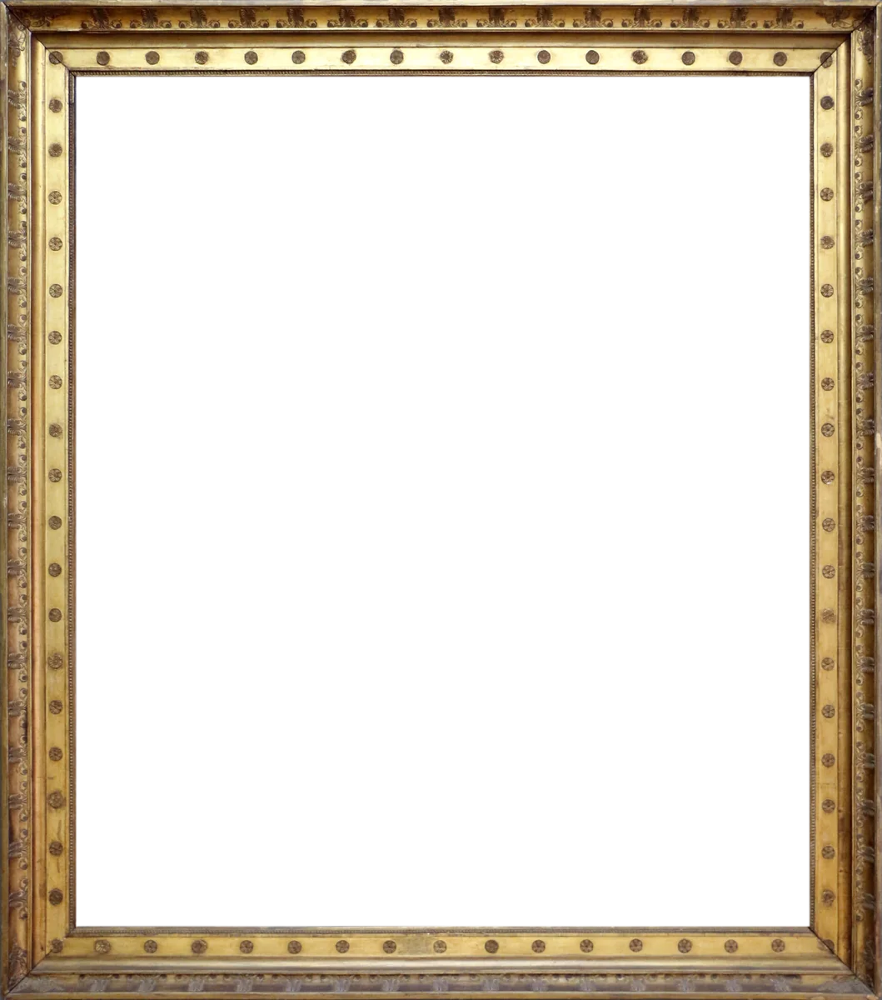
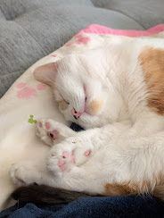
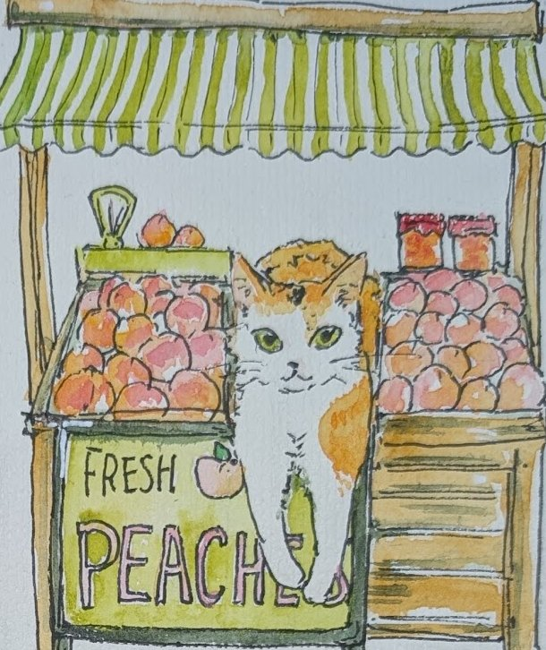
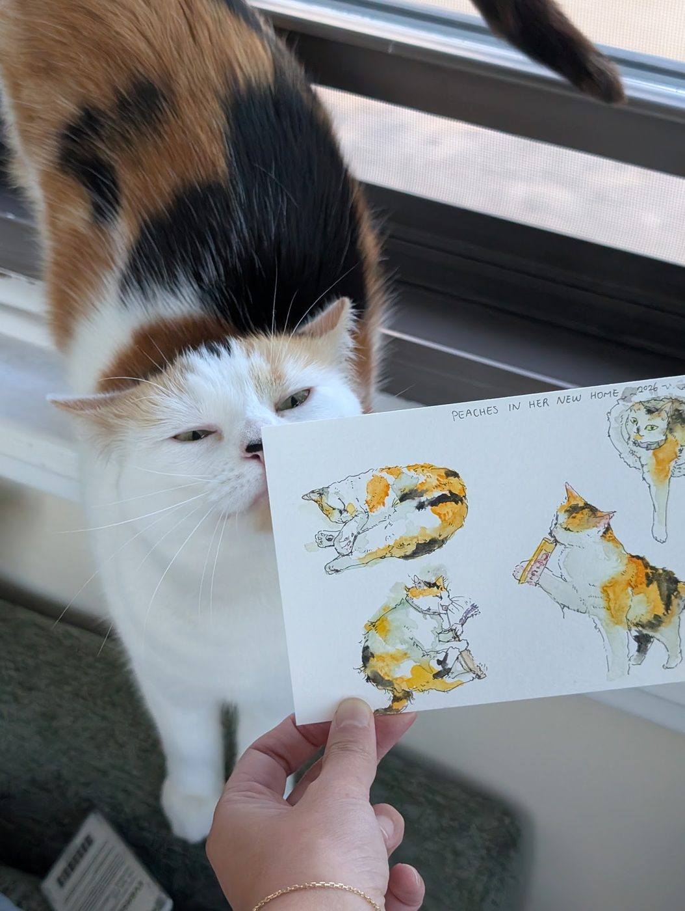

Peaches
The Permanent Collection — works devoted to one very good calico.


Repose with Paws Extended
2026 · Digital photograph


Vigil at the Curtain
2026 · Digital photograph


Odalisque on the Sofa Arm
2026 · Digital photograph
Tribute, Being Received
2026 · Digital photograph

Toe Beans in Repose
2026 · Digital photograph
In the Artist's Hand

Peaches, Selling Peaches
2026 · Detail from Cat Market

Studies of a Calico (with Critic)
2026 · Watercolor · see all art
Frames: Sailko (CC BY 3.0), Hubert Robert (PD), Samuel Stanesby (PD) — via Wikimedia Commons.